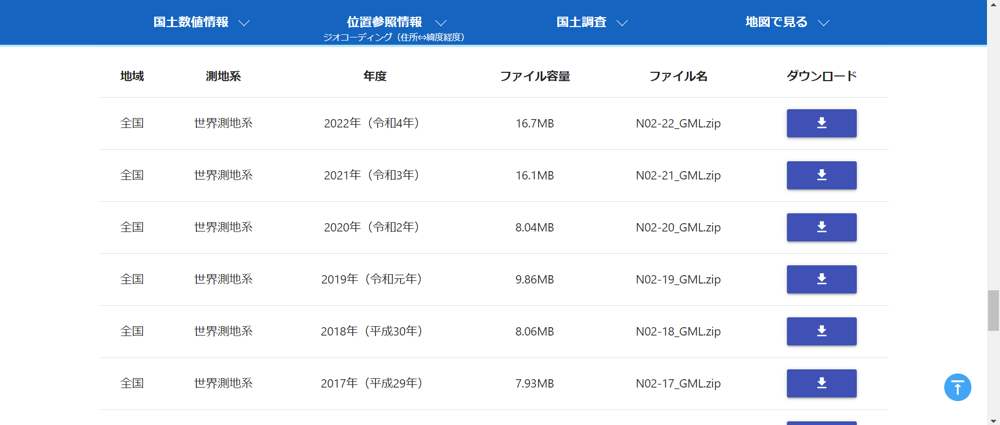
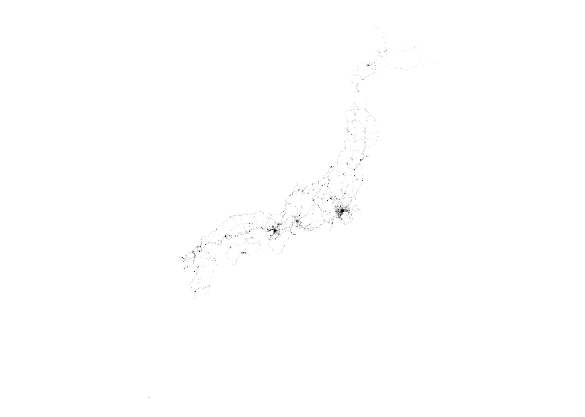
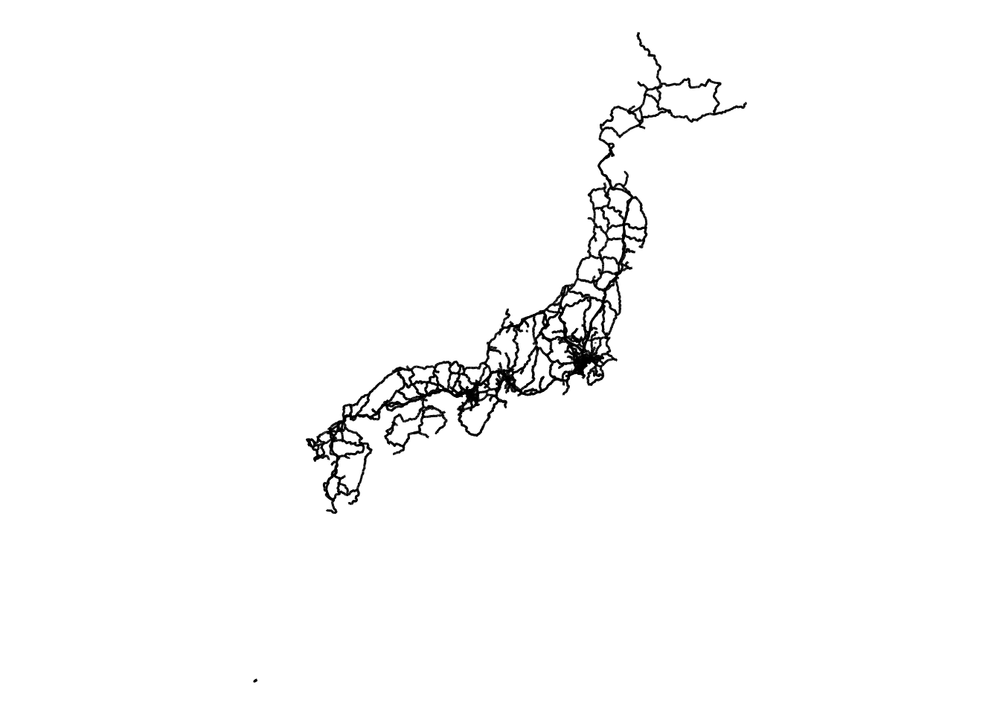
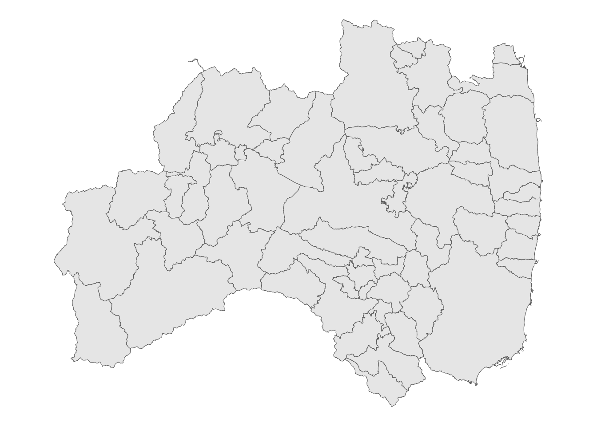

# パッケージのインストール
install.packages("sf")
install.packages("tidyverse")
install.packages("here")はじめに
R 上で GIS を操作する方法を簡単に紹介します。
GIS を R 上で実行するメリットは、再現性が担保できることです。同じ作業を繰り返しするような場合、力を発揮すると思います。また、ggplot2 で可視化できる点も便利です。
主に、使用するパッケージ、データの読み込み、簡単なデータハンドリング、そして交差する地物の抽出を少しご紹介します。
使用するパッケージ
sf パッケージを使用します。また、これらのデータを通常のデータと同様 tidyverse でハンドリングできるので、これら2つを主に使います。
また、ここでは詳しく紹介しませんが、私は here パッケージも使用します。こちらの記事で紹介しているような方法でプロジェクトを実行している場合、相対パスを使用すると便利です。詳しくは作業の流れで見てみてください。
NoteDocker で環境を構築する場合
Docker を用いた環境構築の記事で紹介している方法で環境を構築する場合、1つ注意点があります。Dockerfile の1行目を以下のように変更してください。
FROM rocker/geospatial:latestrocker/rstudio のままだと、GIS を扱うのに必要なパッケージを使用できません。上のように変更してファイルを保存した後、画面左下「>< 開発コンテナー」 をクリックし、「コンテナーのリビルド」を実行してください。
# パッケージの読み込み
library(sf)
library(tidyverse)
library(here)使用するデータ
鉄道データ
今回は日本の鉄道（駅）データを使用してみます。
- 国土数値情報ダウンロードサイトより「鉄道（ライン）」をクリック、2022年のデータをダウンロード

行政区域データ
後ほど鉄道データと重ねて使うために使用します。
同様に国土数値情報ダウンロードサイトから、「行政区域」に進み、今回は福島県の2024年データをダウンロードします。
鉄道データと同じフォルダに入れておいてください。
データの読み込み
ダウンロードしたデータには、駅のデータと路線のデータがそれぞれ入っています。
それぞれ読み込みます。読み込みには、sf::read_sf() を使います。sf::st_read() もありますが、こちらは読み込む際に設定を施したい場合に使います。基本は前者で OK です。
UTF-8 で読み込みたいので、utf8 フォルダの中のデータを使用します。読み込むのは Shapefile です。
station <- read_sf(here("data/N02-22_GML/utf8/N02-22_Station.shp"))
rail <- read_sf(here("data/N02-22_GML/utf8/N02-22_RailroadSection.shp"))
Tiphere について
ご覧の通り、here はワーキングディレクトリをベースとして、そこからの相対パスでファイルの読み込み等を行うことができます。
R のプロジェクトを使用している場合、.Rproj ファイルがあるところがワーキングディレクトリです。今回はその中の data フォルダにデータを入れているので、このような書き方になっています。here() の中はダブルクォーテーションで囲んでください。
データの可視化
ggplot2
おなじみ ggplot2 パッケージを使ってこれらの路線を可視化します1。
station |>
ggplot() +
geom_sf() + # GIS 用
theme_void() # 背景や罫線を除去

なんとなく日本が形作られましたね。東京と大阪に特に駅が多いことも一目瞭然です。
同様に路線もプロットします。
rail |>
ggplot() +
geom_sf() +
theme_void()

こうして見るとなんか面白いですよね。北海道の北東部は線路がないみたいです。
ここまでシンプルに可視化する方法をご紹介しました。次のセクションでもう少し地域にフォーカスして見ていきます。
データハンドリング
データの抽出
例えば、新幹線の駅だけデータとして使いたいとします。
先ほどのダウンロードサイトの属性情報の部分をご覧ください。そこから事業者種別コード（変数名：N02-002）を確認してみると、1が新幹線に該当することが分かります。
ここで、tidyverse パッケージを使用しながら、東北新幹線の駅だけを抽出してみましょう。また、列名を変更しながら必要な変数のみ抽出します。
sta_tohoku <- station |>
filter(N02_002 == 1, N02_003 == "東北新幹線") |>
select("路線名" = N02_003, "駅名" = N02_005, geometry)| 路線名 | 駅名 | geometry |
|---|---|---|
| 東北新幹線 | 二戸 | c(141.28627, 141.28491, 40.26107, 40.25848) |
| 東北新幹線 | いわて沼宮内 | c(141.21742, 141.21742, 39.96114, 39.96009) |
| 東北新幹線 | 八戸 | c(141.42981, 141.43206, 40.50822, 40.51043) |
| 東北新幹線 | 盛岡 | c(141.13807, 141.13499, 39.70015, 39.70295) |
| 東北新幹線 | 北上 | c(141.12356, 141.12285, 141.12234, 141.12168, 39.28386, 39.28272, 39.28188, 39.28054) |
| 東北新幹線 | 水沢江刺 | c(141.18919, 141.18822, 39.14381, 39.14651) |
表 1 をご覧いただくと分かる通り、東北新幹線の駅のみを抽出できています。また、geometry 変数が地理情報を示しています。
ラインデータをポイントデータ化する
駅はラインデータになっています。駅は幅を持っているためです。そこで、これをポイントデータ化し、駅の位置を1点で特定します。
まず、ラインデータがどうなっているか確認しましょう。地図を拡大して見てみると、線状になっていることが分かります。
これをポイント化するために使用するのが、sf::st_centroid() です。地物の重心を求めてくれます。
コードは以下です。
sta_tohoku_c <- sta_tohoku |>
st_centroid(geometry)改めて見てみると、ポイントになっていることが分かります。
ポイントデータ化するメリットとしては、距離の算出に使えることなどがあります。ある地点から駅までの距離を算出したい場合、駅が幅を持っていると距離算出の基準が曖昧になってしまうので、そこでポイント化すればその基準を明確化できるというわけです。
以上、sf::st_centroid() を用いてポイントデータ化する方法をご紹介しました。
交差する地物の抽出
先ほど福島県のデータをダウンロードしました。ここで、福島県に含まれる新幹線駅を抽出したいとします2。
行政区域データ
まず、福島県の行政区域データを読み込み、可視化しましょう。
fukushima <- read_sf(here("data/N03-20240101_07_GML/N03-20240101_07.shp"))fukushima |>
ggplot() +
geom_sf() +
theme_void()

抽出
次に、sta_tohoku_c を用いて、福島県と交差する（含まれる）駅を抽出します。
交差する地物を抽出するためには、sf::st_intersects() もしくは sf::st_intersection() を用います。
正直後者の方がシンプルなのですが、両者には次のような違いがあります。
st_intersects(): 2つのジオメトリが交差するかどうかの論理判定（TRUE/FALSEやインデックスのリスト）を返すst_intersection(): 交差部分のジオメトリそのものを新しいオブジェクトとして返します。
何やら難しいので、わかんなくて困ったら後者を使っておけばよいのではないでしょうか3。
コードは以下のようになります。
sta_07_a <- sta_tohoku_c |>
filter(
row_number() %in%
st_intersects(fukushima, sta_tohoku_c) |>
unlist()
)sta_07_b <- st_intersection(fukushima, sta_tohoku_c)
Note1つ目の方法について
1つ目は大変複雑ですね。プロセスを紐解くと次のようになります。
sta_tohoku_cから抽出するので、sta_tohoku_cからスタート抽出するので
dplyr::filter()を使用sf::st_intersects()で、fukushimaと重なるsta_tohoku_cを抽出sf::st_intersects()はリスト形式で結果を返すので、unlist()を用いてリスト形式を解除sta_tohoku_cの行番号と照らし合わせ、返ってきた結果と同じもののみ抽出
結果は次のようになります。
| 路線名 | 駅名 | geometry |
|---|---|---|
| 東北新幹線 | 福島 | c(140.458612067603, 37.7540599673619) |
| 東北新幹線 | 郡山 | c(140.388619989856, 37.3986200007428) |
| 東北新幹線 | 新白河 | c(140.188827537169, 37.1233084742238) |
| N03_001 | N03_002 | N03_003 | N03_004 | N03_005 | N03_007 | 路線名 | 駅名 | geometry |
|---|---|---|---|---|---|---|---|---|
| 福島県 | NA | NA | 福島市 | NA | 07201 | 東北新幹線 | 福島 | c(140.458612067603, 37.7540599673619) |
| 福島県 | NA | NA | 郡山市 | NA | 07203 | 東北新幹線 | 郡山 | c(140.388619989856, 37.3986200007428) |
| 福島県 | NA | 西白河郡 | 西郷村 | NA | 07461 | 東北新幹線 | 新白河 | c(140.188827537169, 37.1233084742238) |
2つ目のやり方の方が少しごちゃっとしたデータとして返ってきました。
めんどくさいけどクリーンな方か、簡単だけど煩雑な方か、お好みで使ってみてください。
おわりに
今回は GIS を R で動かす基礎的な内容をご紹介しました。
交差する地物の抽出にも触れましたが、これだけではまだ分析に使える内容ではないので、距離計算などはまた別記事で書こうと思います。
間違いや効率的なコーディング等ございましたら、コメントにご記入ください。